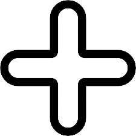

<div *ngIf="this.todos.length === 0; else displayTodosBlock">Hurray! No todos to display!</div>
<ng-template #displayTodosBlock>
    <div *ngFor="let todo of todos; index as index">
        <app-todo-item 
            [todo] = "todo"
            [index] = "index" 
            (deleteTodo)="deleteTodo($event)" 
            (toggleTodo)="toggleTodo($event)"
        ></app-todo-item> 
    </div>
</ng-template>


<button type="button" class="btn " (click)="popup = true">
    
</button>

   <div class="overlay" *ngIf="popup">
    <div class="popup">
        <h2>Create Todo Item</h2>
        <a class="close" (click)="popup = false">&times;</a>
        <div class="content">
            <app-create-todo-item (todoAdd)="addTodo($event)"></app-create-todo-item>
        </div>
    </div>
</div>
